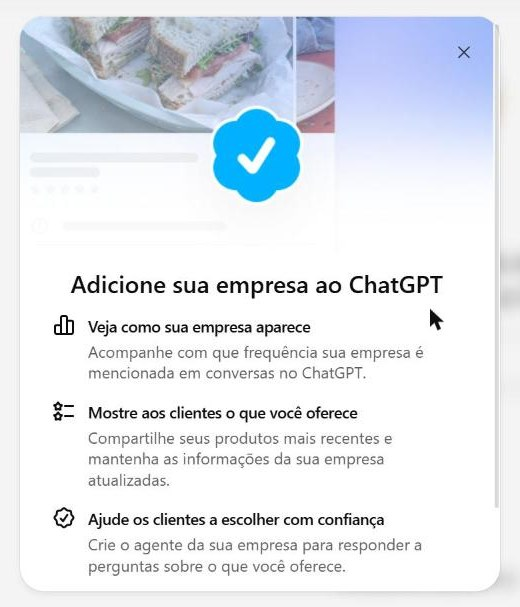
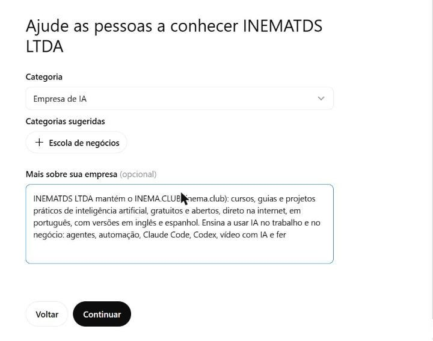

Empresa no ChatGPT é um kit grátis para você reivindicar o perfil da sua empresa na Central de Negócios do ChatGPT (o "Business Hub", lançado pela OpenAI em novembro de 2026), igual ao perfil de empresa do Google. Serve para quem tem loja, consultório, escritório ou vende pela internet. Traz o teste do que o ChatGPT diz de você hoje, a ficha para preencher, as dicas do que deu errado com a gente e um pedido pronto para um agente de IA fazer o cadastro no seu navegador. À mão, precisa só de uma conta do ChatGPT, mesmo a grátis, e é de graça. O caminho com o agente é opcional e usa o Claude Code, que é de outra empresa (a Anthropic) e pede um plano pago do Claude e um computador com o Chrome.
Antes e depois de reivindicar
😩 Sem o perfil
O ChatGPT responde sobre você com o que encontrar: horário velho, telefone errado, preço inventado. Ou mostra outra empresa com nome parecido.
Quando procuramos "INEMA", ele mostrou o instituto do meio ambiente da Bahia, com 6 endereços. Nenhum era o nosso.
😌 Com o perfil
Você diz o nome, o site, a categoria e uma descrição do seu jeito. O site fica verificado e o ChatGPT passa a ter uma fonte oficial: você.
Depois da verificação de identidade, a OpenAI promete mostrar quantas vezes o ChatGPT cita a sua empresa e deixar você criar o agente que responde clientes. Isso nós ainda não vimos: o nosso perfil está esperando a selfie.
Fonte do número de usuários e do recurso: OpenAI, "Empresas no ChatGPT". O recurso está em beta: as regras podem mudar e nem toda empresa ou país consegue ainda. No Brasil, em 22/11/2026, abriu para nós.
Entenda em poucos minutos
O vídeo com o passo a passo está sendo produzido e entra aqui assim que for publicado.
Como reivindicar, tela por tela
Estas são as telas do nosso cadastro, em português, do jeito que apareceram para nós.
Ache a sua empresa
Entre em chatgpt.com/business-hub (ou no menu lateral do ChatGPT) e pesquise o nome. Pesquise o nome curto e o completo. Achou a sua? Escolha a que tem o seu endereço. Não achou? Clique em Criar.


Prove que a empresa é sua
Primeiro ele pergunta como você atende. Local físico (loja, consultório, escritório): a prova costuma ser um código no telefone comercial. Loja online: ele pede o site e uma linha para colocar no DNS do site, a "lista de endereços" do seu domínio. Isso fica no painel de quem vendeu o seu domínio (Registro.br, Hostinger, GoDaddy, Cloudflare…): mande o print desta tela para quem cuida do seu site, que ele faz em um minuto, ou deixe o agente fazer. Também dá para provar pelo e-mail da empresa ou pela loja Shopify, quando o ChatGPT oferecer essas opções.


Diga quem você é
Categoria (de uma lista), uma descrição de até 300 caracteres, entrega e devolução. Escreva como você quer que o ChatGPT fale de você. Depois, confirme a sua identidade com documento e selfie: sem isso o perfil fica como rascunho. Então convide a sua equipe.


Um agente fez o cadastro sozinho
Não preenchemos o formulário à mão. Pedimos para o Claude Code, um agente de IA, usar o nosso navegador já logado. Ele clicou, leu as telas, preencheu e só parou nos pontos que são do dono.
- Abriu a Central de Negócios
no Chrome, já logado na conta da empresa. Pesquisou "INEMATDS" (nada) e "INEMA" (o instituto da Bahia) e mostrou o problema. - Criou o perfil
"Criar 'INEMATDS LTDA'", loja online, site inema.club. - Parou e pediu o sim
para mexer no DNS do site. Com o sim, colocou a linha, conferiu que ela já aparecia na internet e clicou em "Verificar domínio". Passou na hora. - Preencheu o resto
categoria "Empresa de IA", descrição (encurtou quando viu o corte em 300 caracteres), entrega e devolução. E enviou. - Entregou o relatório
prints de cada tela e o que falta: a verificação de identidade, que só o dono faz.
🤖 O que o agente faz
Pesquisa, cria, preenche, coloca a linha no DNS (se você deixar) e confere cada passo.
✋ Onde ele para
Antes de mexer no seu DNS, antes de pôr telefone ou e-mail público e antes de enviar. Ele pergunta e espera.
👤 O que é só seu
Código do telefone, documento e selfie. Isso o agente nunca faz por você.
O que aprendemos fazendo de verdade
Tudo isso aconteceu no nosso cadastro. A lista completa, com 19 dicas, está no kit.
🔎 Procure dos dois jeitos
Nome curto e nome completo. Homônimo é o erro mais comum: "INEMA" trouxe outra empresa.
🏢 Use a conta da empresa
Quem reivindica vira o dono do perfil. Não use a conta pessoal de um funcionário que pode sair.
✂️ 300 caracteres, sem aviso
A descrição é cortada no meio da palavra. Conte antes. O kit tem um conferidor.
⏳ A linha do DNS vence
Cerca de 24 horas. Coloque e verifique no mesmo dia. E não apague depois.
📋 Categoria é de lista
Pesquise por palavra. Para cursos online não há "curso": usamos "Empresa de IA".
📞 Telefone e e-mail ficam públicos
São opcionais. Só coloque o que pode receber cliente.
↩️ Devolução no Brasil
Compra online já tem 7 dias de arrependimento. Marcamos "gratuita, 7 dias".
🧩 Extensões atrapalham
Uma extensão do navegador abria por cima e roubava teclas. Feche as extensões ou use uma janela limpa.
🪪 Sem identidade, é rascunho
Documento e selfie liberam o painel, o agente da empresa e a edição completa.
Faça o teste, depois peça para o agente
Você pode fazer à mão, de graça, seguindo os 3 passos acima (nós fizemos no computador). Ou, se já usa um agente de IA, deixar ele fazer como nós fizemos.
1. Veja o que ele diz hoje
Pergunte ao ChatGPT o que é a sua empresa, o site, o telefone e o horário. Anote. O kit traz 8 perguntas prontas e uma ficha de antes e depois.
2. À mão ou com o agente
À mão: siga os 3 passos acima, é grátis. Com o agente: o Claude Code é um assistente de IA da Anthropic que trabalha no seu computador; com a extensão Claude in Chrome ele usa o seu navegador já logado. Pede um plano pago do Claude. Cole o pedido abaixo nele e troque os dados entre < >.
3. Diga sim e faça a selfie
O agente para e pergunta antes de cada passo sensível. A identidade é com você.
Quero cadastrar a minha empresa no ChatGPT (Central de Negócios, chatgpt.com/business-hub). Leia o kit em https://github.com/inematds/empresa-no-chatgpt (as dicas e a ficha do perfil). Dados da empresa: - nome: <NOME> - como atende: <local físico ou loja online> - site: <SITE> endereço (se físico): <ENDEREÇO> - o que fazemos: <2 ou 3 frases> Regras: 1. Use o meu navegador, já logado na conta da EMPRESA no ChatGPT. 2. Primeiro faça o teste do kit e me mostre o que o ChatGPT diz hoje. 3. Pesquise o nome curto e o completo. Achou a minha empresa? Escolha a do meu endereço. Senão, "Criar". 4. Escreva a descrição com no máximo 300 caracteres e me mostre antes. 5. Pare e me pergunte antes de aceitar termos, mexer no DNS, pôr telefone ou e-mail público e enviar. 6. Código do telefone, documento e selfie são comigo: me avise e espere. 7. No fim, me mostre os prints e diga o que falta.
🛠️ É técnico?
O script que coloca a linha no DNS (Cloudflare), o conferidor da ficha e os testes estão no README do GitHub.
Fizemos com a INEMATDS LTDA, em 22/11/2026
Antes
Busca "INEMATDS": nenhuma empresa.
Busca "INEMA": o instituto do meio ambiente da Bahia, 6 endereços.
Depois
INEMATDS LTDA criada, loja online, site inema.club verificado, categoria "Empresa de IA", descrição nossa. Status: rascunho até a verificação de identidade do dono.
Este guia é atualizado quando a verificação de identidade for concluída e quando repetirmos o teste, 7 dias depois.
Antes de você começar
Precisa pagar?
À mão, não: reivindicar o perfil é grátis e fizemos com uma conta grátis do ChatGPT. Há ofertas pagas (anúncios, plano Business), mas não são necessárias. Só o caminho com agente usa um serviço pago à parte (o plano do Claude, para o Claude Code).
Funciona no Brasil?
Para nós funcionou, em 22/11/2026, em português. É beta: se para você ainda não abrir, o kit serve quando abrir.
Preciso programar?
Não. Os 3 passos são de clicar e preencher. A linha do DNS quem cuida do seu site faz, ou o agente faz com o seu sim.
E se alguém já reivindicou a minha empresa?
As fontes falam de uma opção de contestar a posse e de um suporte quando o perfil está travado. Não passamos por isso; conte para a gente se acontecer com você.
Isso me coloca no topo das respostas?
Não há promessa de posição. O ganho é o ChatGPT ter os seus dados certos, verificados, e você ver como ele fala de você.
Dá pelo celular?
Nós fizemos no computador. A Central de Negócios abre pelo navegador; a linha do DNS e o agente pedem computador. Se o seu caso for o código no telefone, o resto é clicar e preencher.
O agente pode errar?
Pode, por isso ele para antes de cada passo sensível e mostra o que vai fazer. Você confere a descrição antes de enviar.
E você: quando pergunta da sua empresa para o ChatGPT, ele acerta? Grátis no inema.club, direto na internet.